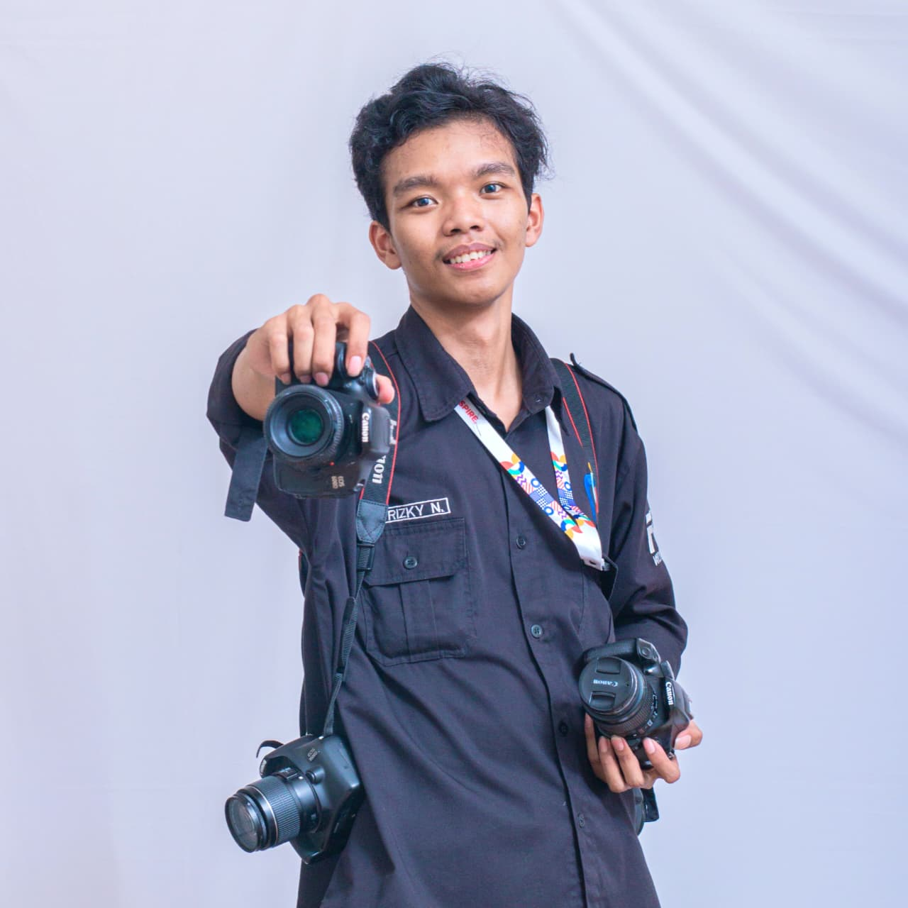

Aplikasi Chat Anonim
Chat real-time untuk organisasi mahasiswa, tanpa perlu menampilkan identitas pengirim.
Lihat proyekHalo, saya
Mahasiswa Teknik Informatika semester 3. Saya membuat website, sistem monitoring jaringan, dan perangkat ESP32 yang benar-benar dipakai. Part of Lumensky Studio

Saya Rizky, mahasiswa Teknik Informatika semester 3. Saya suka mengubah ide menjadi sesuatu yang bisa dipakai: dari aplikasi chat anonim, dasbor monitoring router, sampai gantungan kunci pintar dengan layar TFT.
Di kampus saya belajar Algoritma, Managemen Proyek, Pemrograman Web, struktur data, Pemrograman Berbasis Objek, dan basis data. Di luar kelas saya aktif di organisasi mahasiswa dan mengerjakan proyek pribadi di bidang web, IoT, dan otomasi.
Chat real-time untuk organisasi mahasiswa, tanpa perlu menampilkan identitas pengirim.
Lihat proyekWebsite studio foto dan video, saat ini sedang dirombak UI/UX-nya.
Kunjungi websiteIni kenapa kok saya namai dengan sebutan project pink, karna seorang perempuan ini suka warna pink dan aku mau coba membuat project bertema pink.
Lihat proyekPerangkat dengan layar TFT yang menampilkan pesan dan gambar yang diunggah lewat web.
Lihat proyekTerbuka untuk magang, proyek kolaborasi, dan pekerjaan lepas.